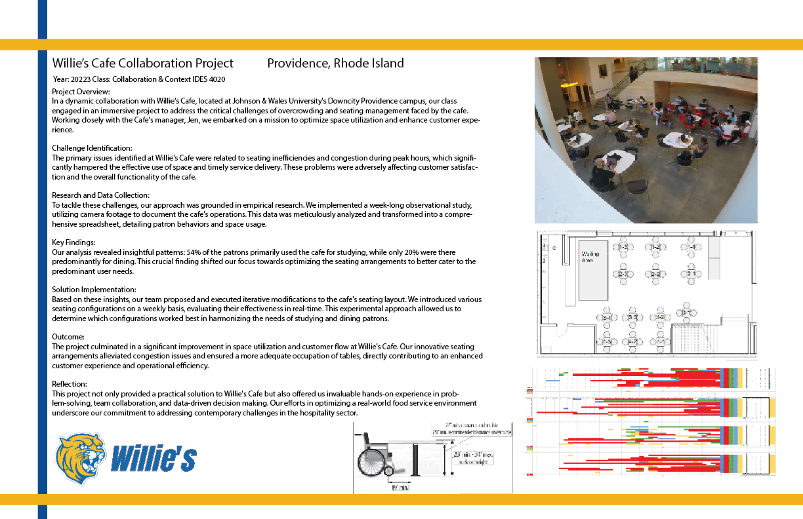
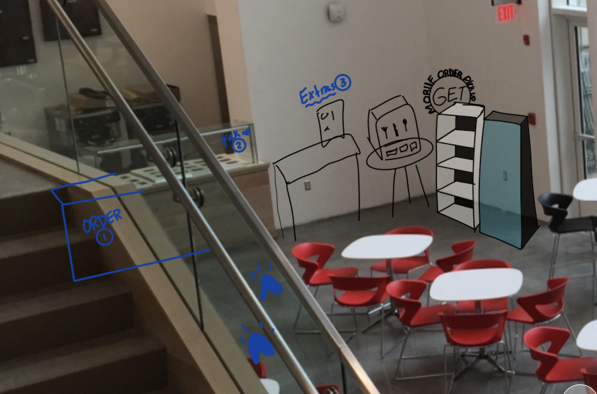
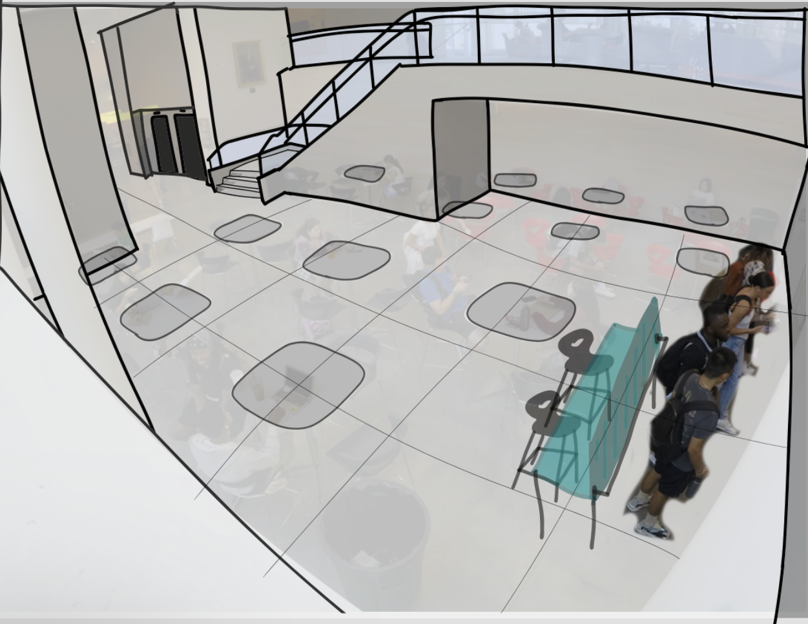
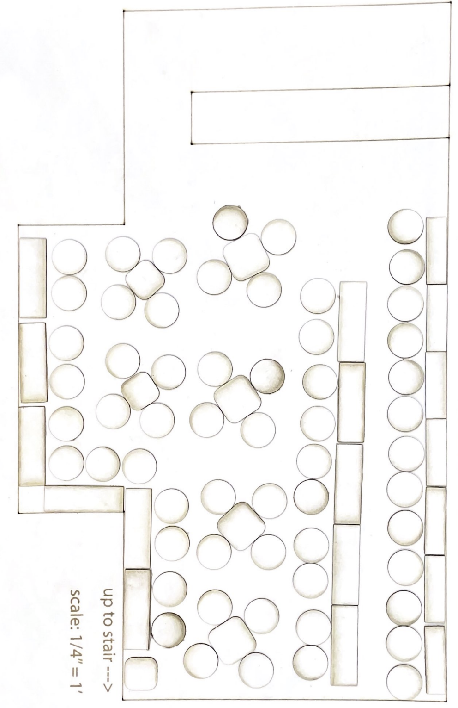

Case Study
Willie's Café — Space Study
A data-driven space study that identified overcrowding patterns in a university café and proposed evidence-based seating redesigns grounded in ADA compliance and observational research.
TL;DR
- Role
- Space analyst — data collection, Revit modelling, seating design concepts
- Team
- Michael Dattolo, Mat Hartung, Marshall Hayduk, Keely Doyle, Chris Dimovski
- Duration
- Multi-week study — Johnson & Wales University
- Tools
- Revit, observational video recording, custom data sheets, ADA guidelines
- Outcome
- Identified that 54.7% of students study rather than eat; proposed cafeteria-style and bar-style seating to increase capacity and reduce wait times
Problem
Willie's Café at Johnson & Wales University was experiencing chronic overcrowding and seating mismanagement. During peak hours, students faced congestion that delayed order delivery and made finding a seat frustratingly difficult. The existing layout wasn't optimized for how students actually used the space—which, as we discovered, was often not for eating at all.
The challenge: gather hard data on real usage patterns, model the existing space accurately, and propose layout changes backed by evidence rather than guesswork.
Research
We obtained permission to place a camera at a strategic vantage point in Willie's Café and recorded student activity over the course of a full week. From the footage, we created detailed data sheets tracking three key variables at regular time intervals:
- Where people sat — which tables were most and least popular.
- What they were doing — eating, studying, socializing, or waiting.
- How long they stayed — session duration per activity type.
Using Revit, we built a precise scale model of Willie's Café with a numbered table chart that let us map every data point to its exact physical location. We created time-sheets for Wednesday 09/13, Tuesday 09/12, Thursday 09/07, and Thursday 09/14/2023.
Key Findings
The data told a clear story:
- 54.7% of students were studying, not eating. More than half the occupants were using tables designed for dining as makeshift workspaces—a fundamental mismatch between furniture design and actual use.
- Most popular tables: Table 4-1, Table 2-1, Table 1-2, and Table 2-2 consistently had the highest occupancy, creating predictable congestion zones.
- Wait times during peak hours were significant enough to impact order flow and the overall dining experience.
We mapped these findings into a "favourite table" heatmap that visualized the crowding pattern spatially on the Revit model.
ADA Analysis
Before proposing any layout changes, we documented the ADA requirements for Rhode Island dining areas that any redesign would need to meet:
- Knee clearance: 27″ high × 30″ wide × 19″ deep beneath each table for wheelchair accessibility.
- Clear floor area: 30″ × 48″ at each seating position.
- Aisle width: 36″+ between fixed objects; 30″ minimum "personal bubble" clearance.
We also surveyed the existing furniture dimensions—small rectangular tables (18″ × 60″), large rectangular tables (24″ × 72″), tall square pub tables (36″ × 36″), short square tables (29″ × 29″), and chairs with a 30″ × 30″ personal-space bubble—to verify that any proposed configurations would satisfy these constraints.
Design Proposals
Based on the data and ADA analysis, we developed two redesign concepts:
- Cafeteria-style seating — Long communal tables that efficiently seat more students per square foot while naturally accommodating both eaters and studiers. Bench-style seating reduces the footprint of individual chairs and increases aisle clearance.
- Bar-style seating — A counter along the perimeter walls with stools, targeted at the 54.7% of students who are studying. Frees up central tables for actual diners, creates a natural zoning of activities, and makes use of otherwise dead wall space.
We also proposed a dedicated waiting area near the order counter to reduce the congestion caused by students standing in the main dining area while waiting for food.
Outcome
The project delivered a complete data-backed case for redesigning Willie's Café, including:
- A week's worth of quantitative occupancy and activity data.
- A precise Revit scale model with numbered tables for spatial analysis.
- A favourite-table heatmap identifying congestion hotspots.
- ADA-compliant redesign proposals that address the root cause—activity mismatch—rather than just adding more tables.
The key insight—that the problem isn't too few seats, it's the wrong kind of seats for how the space is actually used—reframed the conversation from "add more furniture" to "redesign the experience."
Project Gallery





